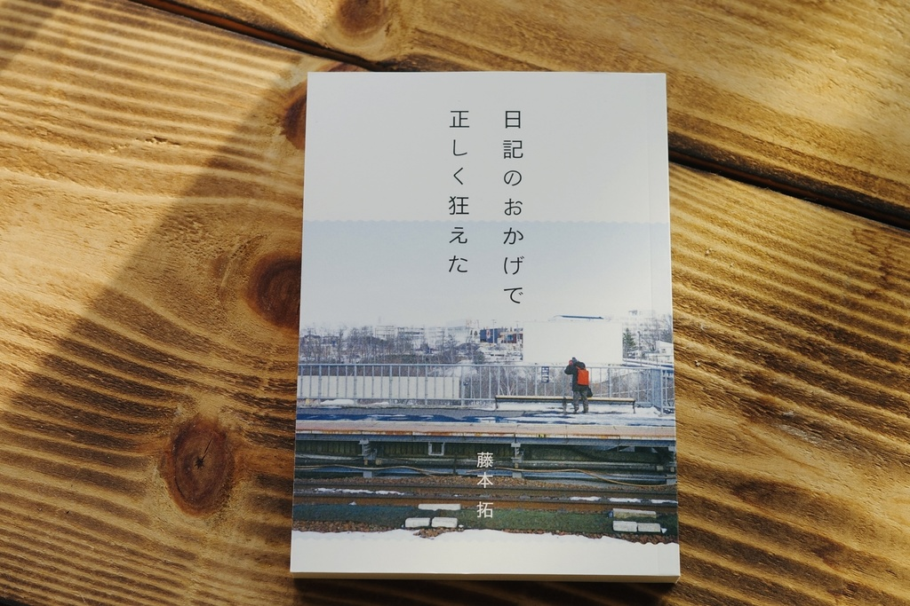

作品一覧・取扱店
主要作品
| 写真 | 詳細 | 取扱書店 |
|---|---|---|
|  | 日記のおかげで正しく狂えた 2024~2025年の日記 |
私設図書館祝日（北海道）※閲覧、本と喫茶 NOMAD BOOKS（北海道）、そぞろ書房（東京）、古本とビール アダノンキ（北海道）、Seesaw Books（北海道）、喫茶こん（北海道）※閲覧、珈琲茶寮 こはく堂（北海道）※閲覧、エチュードブックス（大阪）、テントセンブックス（福岡）、カルガモBOOKS（東京）、よはくの本やさん（北海道）※feat.Lonesome Dance Books、yumegiwa books（京都）、日記屋月日（東京） |